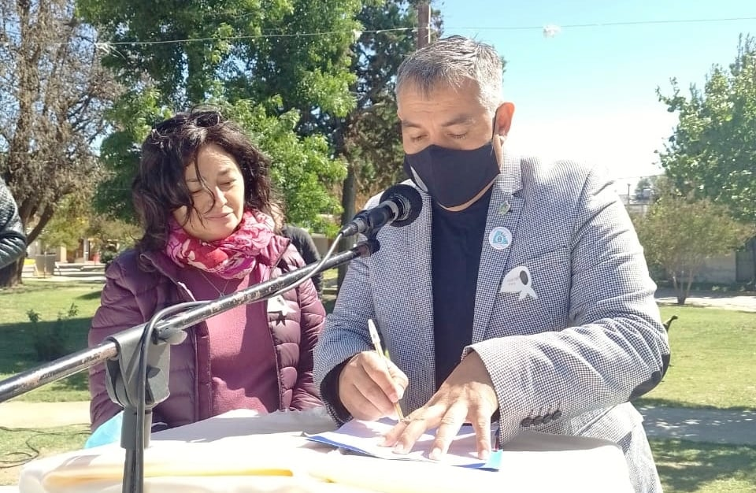

Acto en Conmeracion al dia de la Democracia en San Carlos Minas
El día 24 de marzo, en Plaza Central Pio Angulo de la localidad de San Carlos Minas se llevó a cabo un emotivo acto, conmemorando a las Víctimas de la última dictadura militar, autodenominada «¡Proceso de Reorganización Nacional» entre el 24 de marzo de 1976 y el 10 de diciembre de 1983, estos hechos ocurridos no tienen justificación alguna de Ninguna Manera y no deben ocurrir !NUNCA MAS¡
El Poder Ejecutivo Municipal en este día especial y gracias a un trabajo en equipo con Zulma Zárate Profesora de la Universidad Provincial de Córdoba, mediante DECRETO N°10/2022, se crea la COMISION DE LA MEMORIA Ad-Honoren, de San Carlos Minas, Departamento Minas, Conformadas por Instituciones, vecinas y vecinos, con el fin de asesorar, ejecutar, Garantizar y Velar por el cumplimiento de los siguientes Objetivos :
1. Promover el ejercicio de la Memoria Histórica como instancia de conocimiento y reconocimiento del pasado y factor constitutivo de nuestro presente, a fin de afianzar procesos democráticos en los ámbitos sociales, culturales y políticos de la comunidad.
2. Fortalecer el trabajo interinstitucional a nivel local y regional, en la promoción, defensa y ejercicio de los Derechos Humanos, presentes en Declaraciones Internacionales y reconocidos en la Constitución Nacional.
3. Contribuir a una Educación Integral de ciudadanos y ciudadanas comprometidos con los valores humanistas, presentes en la perspectiva teórica y política de los Derechos Humanos.
En particular en los diversos Niveles Educativos de nuestra localidad. El apoyo a la DEMOCRACIA es Fundamental, para el crecimiento de los Pueblos en todos los Estamentos, el Terrorismo y Dictadura.